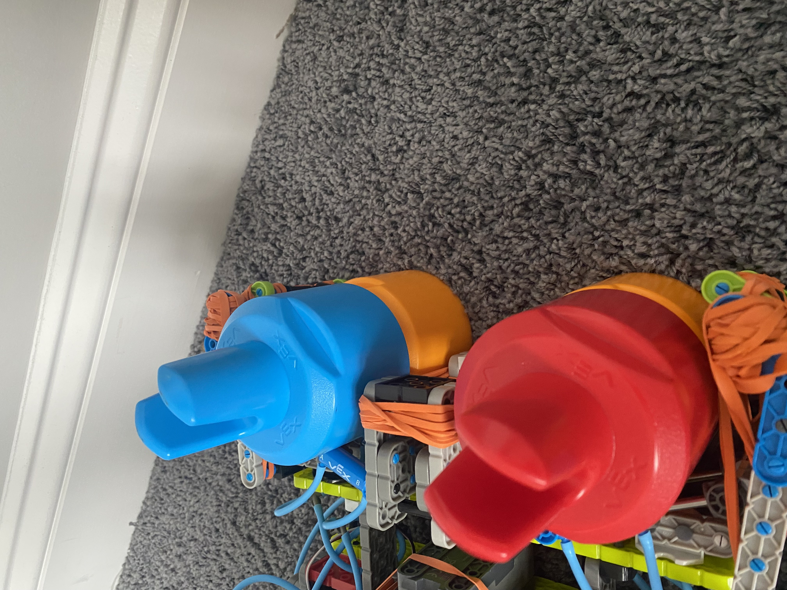
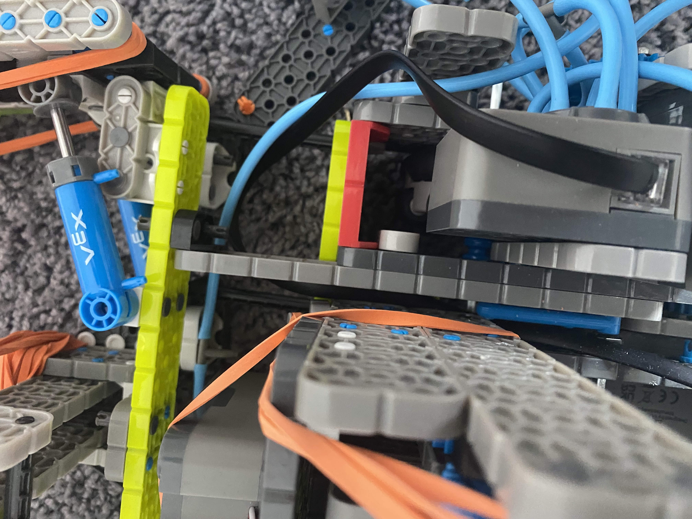

A 180-degree mech arm is one of the most reliable arm styles you can use in VEX IQ. I like this design because it stays compact, moves smoothly, and can be tuned to grab stacked pins without taking up much space on the robot.
1. What a 180° Mech Arm Is
A 180° mech arm rotates from a low pickup position to a high scoring position in one smooth motion. Instead of extending outward like a lift, it stays close to the robot, which helps with balance and consistency.
2. Why This Design Works Well
- It is compact and does not block other mechanisms.
- The motion is smooth and easy to control.
- It can grab two stacked pins with the each claw.
- It does not require complex gearing or extra motors.
3. How I Built Mine
- I used a 2×12 beam for the main arm.
- The arm rotates on a reinforced pivot point for strength.
- A claw is mounted at the end and angled for stacked pins.
- Rubber bands are used to help lift the arm smoothly.
- To make it work better I recommend puting the pivit point higher so you can make the arm smaller (2x12) and thus have more space.
4. Tips for Best Performance
- Keep the arm as light as possible.
- Reinforce the arm near the motor and pivot.
- Use rubber bands to reduce motor strain.
- Test the claw angle until it consistently grabs stacks.
- use a big torque gear ratio so your motors dont get fried. Try a 4:1 or 5:1.


If built cleanly, a 180° mech arm can be one of the most dependable mechanisms on a VEX IQ robot. It is easy to tune, easy to drive with, and works well in fast-paced matches.